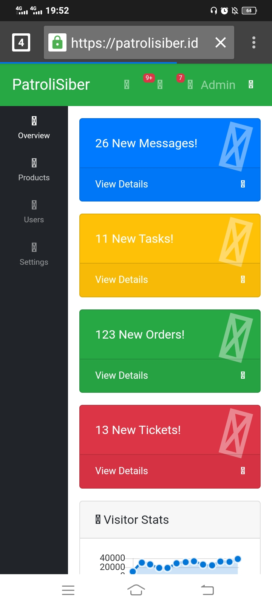

Saya menemukan sebuah celah atau bug di website patrolisiber.id yang dimana bisa mengakibatkan kebocoran data, defacing, ransomware, dan yang paling bahaya dijadikan sumber backlink web judi.
Bug ini bernama Insecure Direct Object Reference (IDOR), dimana halaman dashboard tidak diberi session jadi siapa saja bisa mengakses halaman dashboard admin tanpa harus login terlebih dahulu.
Jika sudah masuk halaman dashboard admin, siapapun bisa merubah setting website, membuat berita, mengupload produk, bahkan upload backdoor.

Kategori Temuan
- IDOR / Broken Access Control
- Admin No Session